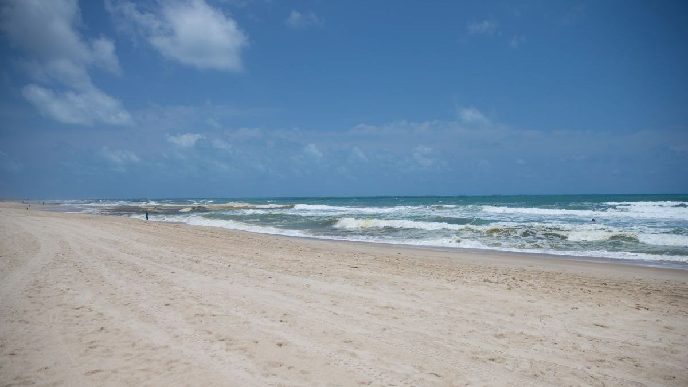

Melhores praias do Brasil: 35 lugares incríveis para visitar.
1- Praia da Baía do Sancho, Fernando de Noronha – Pernambuco
Considerada uma das melhores praias do Brasil e, certamente, uma das praias mais bonitas, a Praia do Sancho é um passeio imperdível em Fernando de Noronha. Ela está localizada em meio a um enorme paredão de pedras e seu acesso se dá pelo mar ou por uma escadaria criada no meio de uma fenda na pedra. O acesso realmente não é dos mais simples, mas o lugar é delicioso e compensa a descida!!
Lá no alto estão alguns mirantes, que levam a observar a própria Praia do Sancho e a vizinha Baía dos Porcos e o Morro Dois Irmãos, também símbolos da beleza de Noronha. No trecho de areia oposto ao acesso, no meio da mata, costuma formar-se uma pequena cachoeira no período de chuvas e na mesma direção, às vezes, é possível observar tubarões no mar. Uma das muitas belezas de Fernando de Noronha e, certamente, uma das praias mais bonitas do Brasil!
GALERIA DE VIDEOS
GALERIA DE IMAGEM

